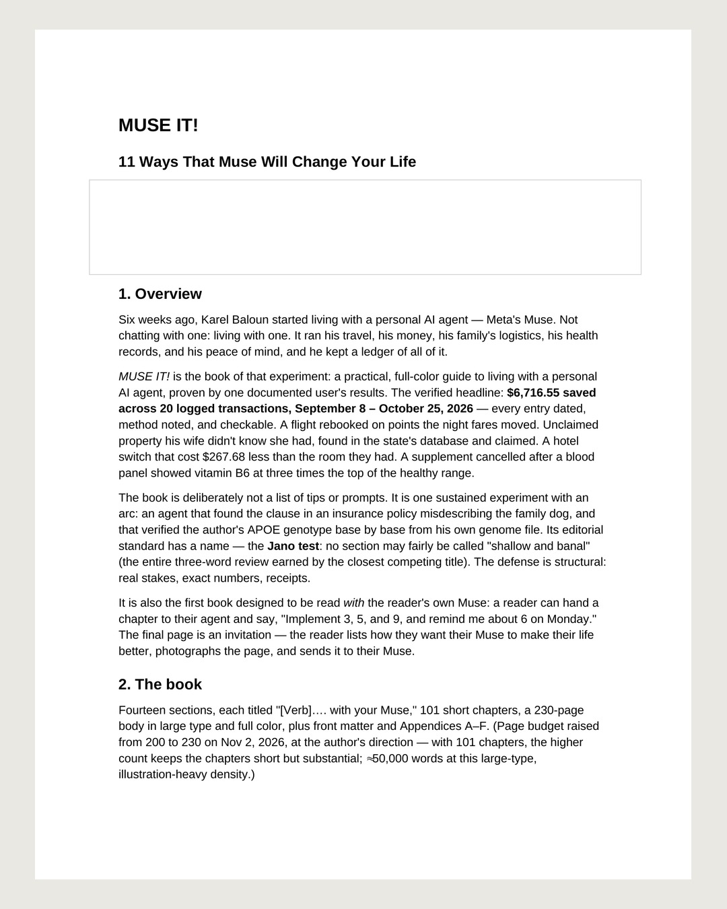

Query day
· from @just.muse.it on Instagram

Query day. On Monday, November 2, I sent this book to two more literary agents on the same day — one through a web form that unexpectedly demanded the full proposal before it would let me submit, one the old-fashioned way, by email. The proposal that went out is built for a 230-page, roughly 50,000-word book. One of the two replies only if interested, sometime in the next six to eight weeks. So now: seven live queries, and the author's oldest job — waiting, and writing the next thing while I wait. No agent names here; they stay private while the answers are pending. Muse It! 📚 #UseMuse #MuseIt #AmWriting